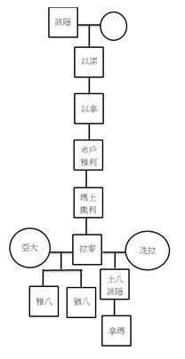
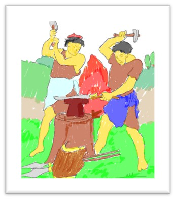
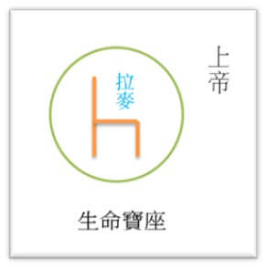
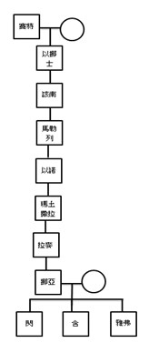
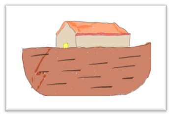
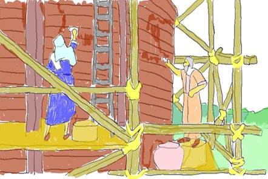
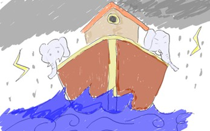

自從該隱殺了亞伯, 人就不再求問神, 向神獻祭了. 該隱後來與他的妻子同房, 就生了以諾. 以諾有一個子孫, 叫作拉麥, 而拉麥有一個兒子是士八該隱, 他是打造各樣銅鐵利器的始祖. 拉麥對他的兩個妻子亞大和洗拉說, 自從他的兒子發明各樣銅鐵利器的打造後, 如果有人膽敢無意或蓄意傷到我, 我就可以把他殺了,因為神曾許諾他的祖宗該隱, 若有人膽敢殺他, 必遭報七倍; 因此, 拉麥自行宣佈, 若有人殺他, 必遭報七十七倍. 拉麥自己當起審判官了,  可自行決定人的生存法則, 似乎一切都他說的算. 我們看到罪的遺傳, 與人在沒有神時, 道德的敗壞, 及人心的墮落.
不但該隱不獻祭, 就連亞當和夏娃也因為失去亞伯, 而在悲傷中無法再求問神, 直到有一天他們同房生了賽特之後, 才平復他們失去亞伯的心, 並告誡賽特要延續下去. 然而, 好景不常, 人才延續了八代, 因為與不敬畏神的人結婚, 以致人心慢慢地遠離神和神的命令. 神從天上看當時地上的人, 除了罪惡還是罪惡, 以致神痛心疾首, 恨鐵不成鋼. 這時神憂傷的宣告審判, 祂必須除滅罪惡, 將罪惡完全從地上抹去, 於是神吩咐挪亞造方舟.
為什神揀選挪亞來製作方舟呢? 挪亞是一個不願與人同流合汙的人, 他雖在罪惡滿盈的世代, 但他仍然保有那純正的靈性, 與神同行, 在那個世代被稱為義人或是怪人. 挪亞總是願意清心寡慾, 信靠並遵行神的命令而行; 因此, 當神吩咐他在晴空萬里之下蓋方舟,  一個能容納受造之生物的龐大方舟, 這樣工程浩大, 他甘心樂意的順服, 並對神有堅定不移的信心. 如此龐然大物, 耗費挪亞一百二十年的歲月, 然而在其間卻看不見絲毫洪水要來的跡象, 所以他除了得克服總總的困難來完成神託付巨大的任務之外, 同時還得面臨人們的譏諷嘲笑. 然而, 方舟是神給人悔改, 免於招致毀滅的救贖方法, 有多少人可以有機會得救呢?
當方舟完成後, 挪亞遵從神的吩咐, 將畜類和鳥類領進入方舟, 但除了挪亞一家八口之外, 沒有人願意相信挪亞的話, 跟著他進方舟的. 結果, 洪水真的下下來了! 因此, 除了挪亞一家八口外, 無人倖免於洪水, 即便人怎麼敲打方舟之門, 門都緊緊的關住, 因為門是神親自關起的, 除祂以外, 無人能開啟, 就這樣天開了, 大雨在地上持續了四十晝夜, 所有的山脈、生物都覆蓋於洪水之中.